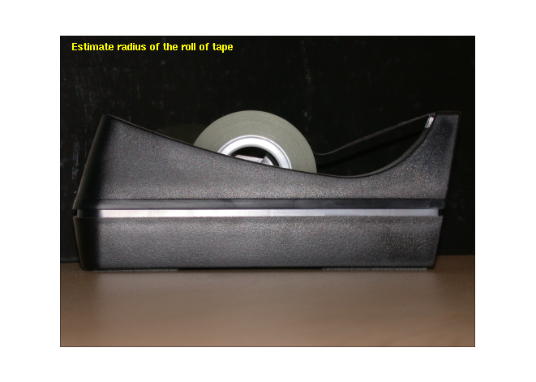
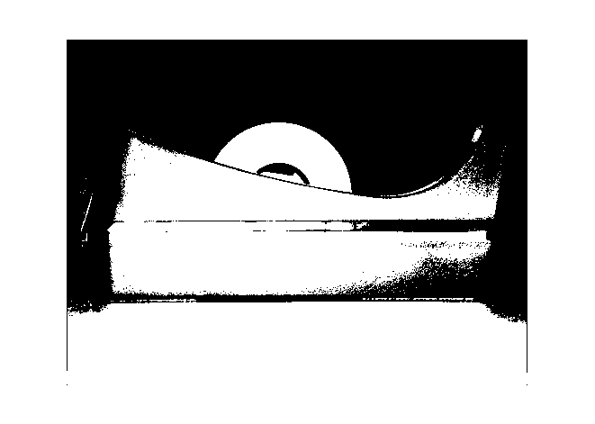
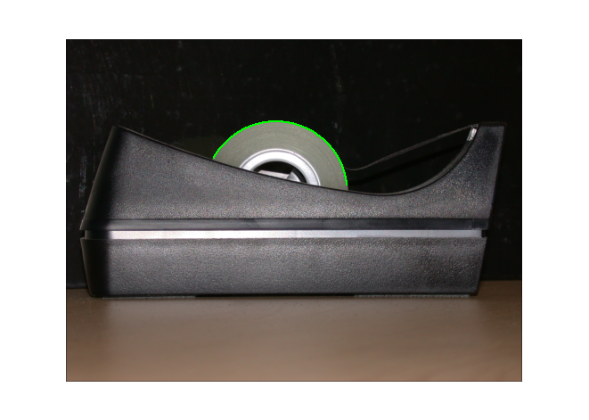
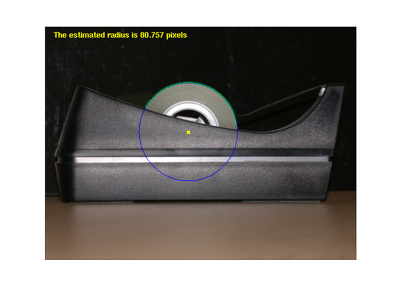

Your objective is to measure the radius of a roll of tape, which is partially obscured by the tape dispenser. You will utilize bwtraceboundary in order to accomplish this task.
Read in tape.png.
RGB = imread('tape.png'); imshow(RGB); text(15,15,'Estimate radius of the roll of tape',... 'FontWeight','bold','Color','y');
Convert the image to black and white for subsequent extraction of the edge coordinates using the bwtraceboundary routine.
I = rgb2gray(RGB); threshold = graythresh(I); BW = im2bw(I,threshold); imshow(BW)
The bwtraceboundary routine requires that you specify a single point on a boundary. This point is used as the starting location for the boundary tracing process.
To find the edge of the tape, pick a column in the image and inspect it until a transition from a background pixel to the object pixel occurs.
dim = size(BW); col = round(dim(2)/2)-90; row = min(find(BW(:,col)));
The bwtraceboundary routine is used to find (X, Y) locations of the boundary points. In order to maximize the accuracy of the radius calculation, it is important to find as many points belonging to the tape boundary as possible. You should determine the number of points experimentally.
connectivity = 8; num_points = 180; contour = bwtraceboundary(BW, [row, col], 'N', connectivity, num_points); imshow(RGB); hold on; plot(contour(:,2),contour(:,1),'g','LineWidth',2);
Rewrite basic equation for a circle:
(x-xc)^2 + (y-yc)^2 = radius^2, where (xc,yc) is the center
in terms of parameters a, b, c as
x^2 + y^2 + a*x + b*y + c = 0, where a = -2*xc, b = -2*yc, and
c = xc^2 + yc^2 - radius^2Solve for parameters a, b, c, and use them to calculate the radius.
x = contour(:,2); y = contour(:,1); % solve for parameters a, b, and c in the least-squares sense by % using the backslash operator abc=[x y ones(length(x),1)]\[-(x.^2+y.^2)]; a = abc(1); b = abc(2); c = abc(3); % calculate the location of the center and the radius xc = -a/2; yc = -b/2; radius = sqrt((xc^2+yc^2)-c) % display the calculated center plot(xc,yc,'yx','LineWidth',2); % plot the entire circle theta = 0:0.01:2*pi; % use parametric representation of the circle to obtain coordinates % of points on the circle Xfit = radius*cos(theta) + xc; Yfit = radius*sin(theta) + yc; plot(Xfit, Yfit); message = sprintf('The estimated radius is %2.3f pixels', radius); text(15,15,message,'Color','y','FontWeight','bold');
radius = 80.7567